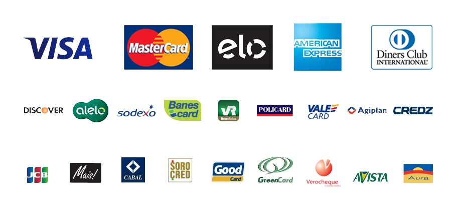

OnePage
Faça seu Login aqui
SOLUÇÃO COMPLETA PARA HOSPEDAR SEU SITE
Escolha um plano perfeito para você
- 
Somos uma provedora de hospedagem de sites e nossa missão é promover o sucesso a todos que querem começar sua jornada online. Para isso, buscamos sempre melhorar a tecnologia dos nossos servidores, oferecer um suporte profissional e tornar a experiência dos nossos clientes com a hospedagem de sites a melhor de todas.
Mais credibilidade Ao ativar a proteção SSL, o URL do seu site começará com HTTPS, e a barra de endereço também mostrará um ícone de cadeado. Esses elementos mostram aos visitantes que o seu site usa SSL e é confiável, desta forma, eles sabem que suas informações estão protegidas.
Nos acompanhe